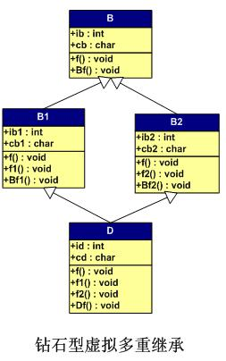

多虚继承
虚拟继承就是为了解决重复继承多个间接父类的问题。最简单的应该就是就是本GitBook多继承那节的钻石型结构的问题，重复继承。如下图所示：

将带虚函数多继承那节的B1和B2前面加上virtual关键字，就使用了虚拟继承，那么代码只给出有改动的地方：
class B { };
class B1 : virtual public B{ };
class B2: virtual public B{ };
class D : public B1, public B2{ };
typedef void(*Fun)(void);
int main()
{
D dd;
Fun pFun = NULL;
int** pVtab = (int**)ⅆ
cout << "bytes of dd: " << sizeof(dd)/4 << endl;
cout << "[0] B1::_vptr->" << endl;
pFun = (Fun)pVtab[0][0];
cout << " [0] "; pFun(); //D::f();
pFun = (Fun)pVtab[0][1];
cout << " [1] "; pFun(); //D::f1()
pFun = (Fun)pVtab[0][2];
cout << " [2] "; pFun(); //B1::Bf1();
pFun = (Fun)pVtab[0][3];
cout << " [3] ";
cout << pFun << endl;
pFun = (Fun)pVtab[0][4];
cout << " [4] "; pFun(); //D::Df();
cout << "[1] B1::ib1 = ";
cout << (int)*((int*)(&dd)+1) <<endl; //B1::ib1
cout << "[2] B1::cb1 = ";
cout << (char)*((int*)(&dd)+2) << endl; //B1::cb1
cout << "[3] B2::_vptr->" << endl;
pFun = (Fun)pVtab[3][0];
cout << " [0] "; pFun(); //D::f();
pFun = (Fun)pVtab[3][1];
cout << " [1] "; pFun(); //D::f2();
pFun = (Fun)pVtab[3][2];
cout << " [2] "; pFun(); //B2::Bf2();
pFun = (Fun)pVtab[3][3];
cout << " [3] ";
cout << pFun << endl;
cout << "[4] B2::ib2 = ";
cout << (int)*((int*)(&dd)+4) <<endl; //B2::ib2
cout << "[5] B2::cb2 = ";
cout << (char)*((int*)(&dd)+5) << endl; //B2::cb2
cout << "[6] D::id = ";
cout << *((int*)(&dd)+6) << endl; //D::id
cout << "[7] D::cd = ";
cout << (char)*((int*)(&dd)+7) << endl << endl;//D::cd
cout << "[9] B::ib = ";
cout << *((int*)(&dd)+9) << endl; //B::ib
cout << "[10] B::cb = ";
cout << (char)*((int*)(&dd)+10) <<endl;//B::cb
cout << "[11] ";
cout << *((int*)(&dd)+11) << endl;
cout << "[12] NULL : ";
cout << *((int*)(&dd)+12) << endl;
cout << "[8] B::_vptr->" << endl;
pFun = (Fun)pVtab[8][0];
cout << " [0] "; pFun(); //D::f();
pFun = (Fun)pVtab[8][1];
cout << " [1] "; pFun(); //B::Bf();
pFun = (Fun)pVtab[8][2];
cout << " [2] ";
cout << pFun << endl;
return 0;
}输出结果：
bytes of dd: 11
[0] B1::_vptr->
[0] D::f()
[1] D::f1()
[2] B1::Bf1()
[3] 1
[4] D::Df()
[1] B1::ib1 = 11
[2] B1::cb1 = 1
[3] B2::_vptr->
[0] D::f()
[1] D::f2()
[2] B2::Bf2()
[3] 0
[4] B2::ib2 = 12
[5] B2::cb2 = 2
[6] D::id = 100
[7] D::cd = D
[9] B::ib = 0
[10] B::cb = B
[11] -4446372
[12] NULL : 0
[8] B::_vptr->
Segmentation fault (核心已转储)上面结果中，应该指向基类B的虚函数表的地方，报错了也没有找到原因，有可能是编译器限制这种访问方式。并且不知为何在dd的最后一个字节是个负数。
陈皓在酷壳中给出了内存分布，VC的应该是正确的，gcc的有一处错误，就不贴了。
小结
感觉虚继承多继承是不如Java单继承简洁，但是Java的接口应该合着个类似吧（接口可以影响子类）。另，Java接口可以有变量不过必须是public static final.